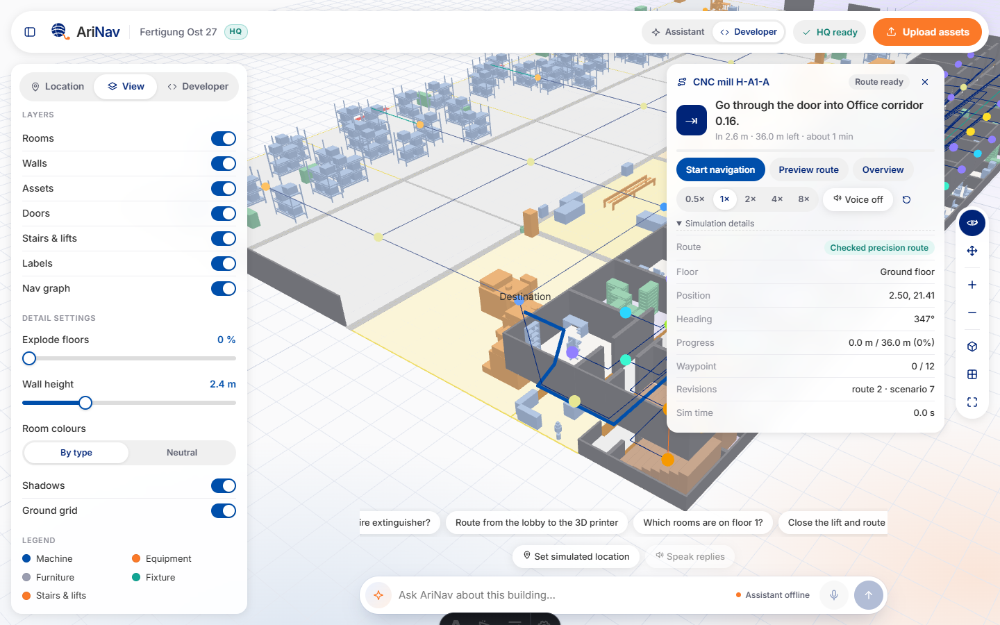
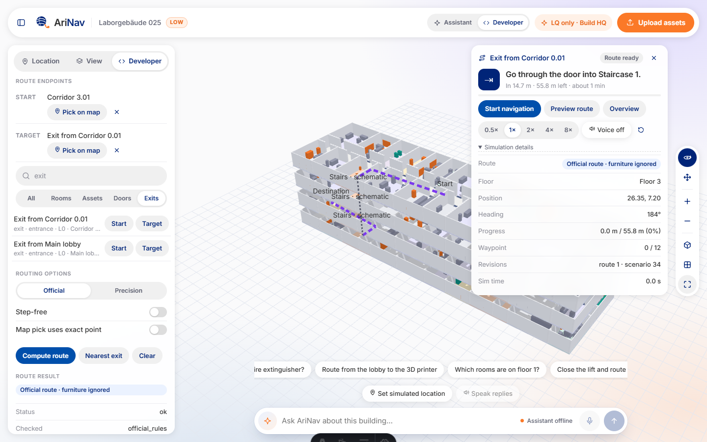
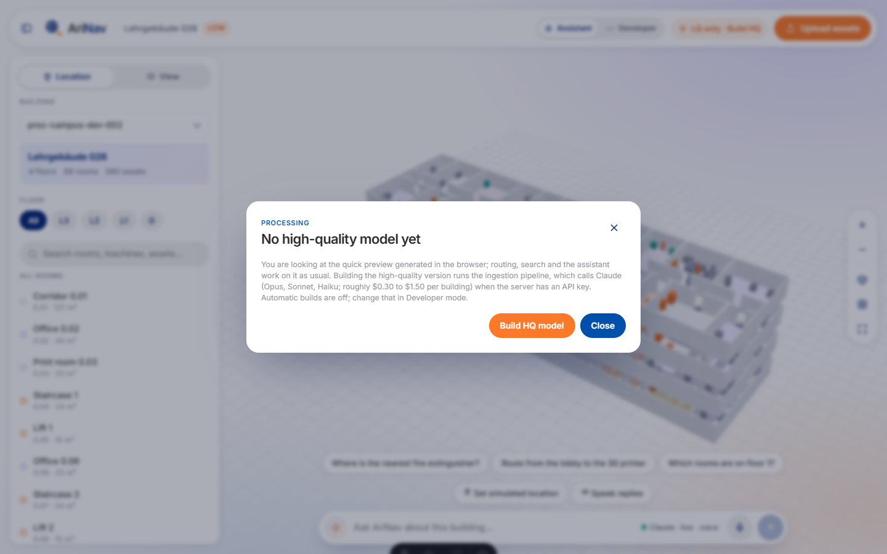

AriNav
Industrial Agents Hackathon 2026 · Track 01
Where is the
3D printer?
Just ask the building.
Find. Route. Edit. React.
ROUTE
Step-free, via the lift
REACT
Lift closed → offers stairs
Live demo · 75 s
Talk to the building

LIVESwitch to the app · backup video ready
🎙 3D printer?
🧭 CNC mill, no stairs
⛔ Close the lift
🚪 Add a door
🏗 Move a machine
Does it work
99 % end to end. 100 % in the core.
0/ 655
Benchmark questions
0/ 240
Buildings ingested · 42 s
017.5 min
All 2,785 questions
1,338 / 1,338 routes, ±1 cm
Claude Haiku
▶ uv run poe benchmark --data <building>
Kit train + dev, 25 Oct 2026 · benchmark_results/graph-train-dev · docs/reports/nav_benchmark_1_1_0.md
How it works
Floor plan in. Conversation out.
Deterministic routing
Claude agent + Confirm
Opus-checked pipeline
What you did not ask for
Built for the people inside.
Walk-along voice guide

Developer mode
One-click HQ 3DPlan → building confirm
Any building.
A map you can talk to.